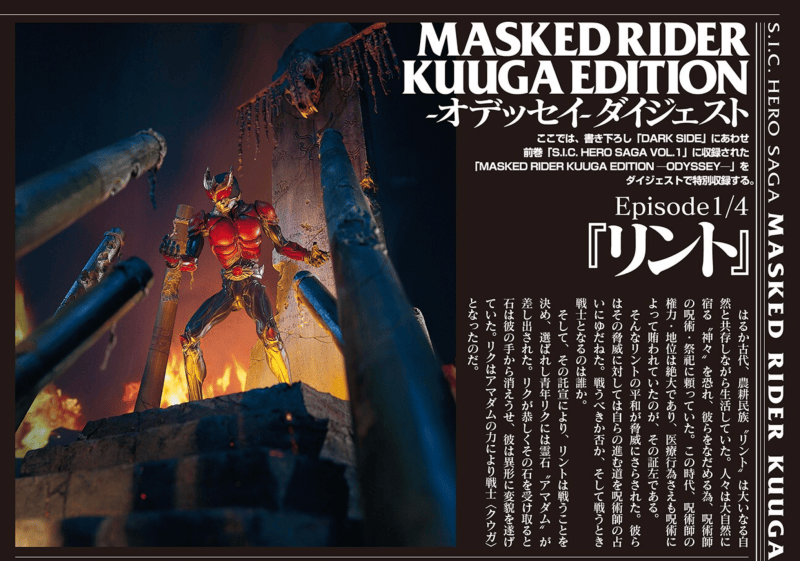

¿Qué es S.I.C. Hero Saga?
S.I.C. (Super Imaginative Chogokin) es una línea de figuras de acción de Bandai inspirada en el arte del escultor Kenji Ando. Cada figura viene acompañada de un relato ilustrado llamado «Hero Saga»: historias alternativas que expanden el universo de Kamen Rider.
La saga Hero Saga presenta episodios serializados que profundizan en personajes y tramas que la serie original apenas esbozó: orígenes, secuelas y «qué pasaría si…» que los fans atesoran.
